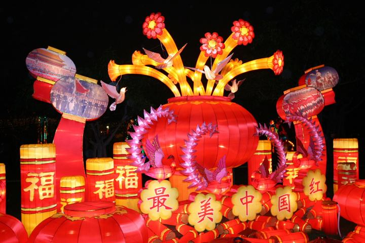
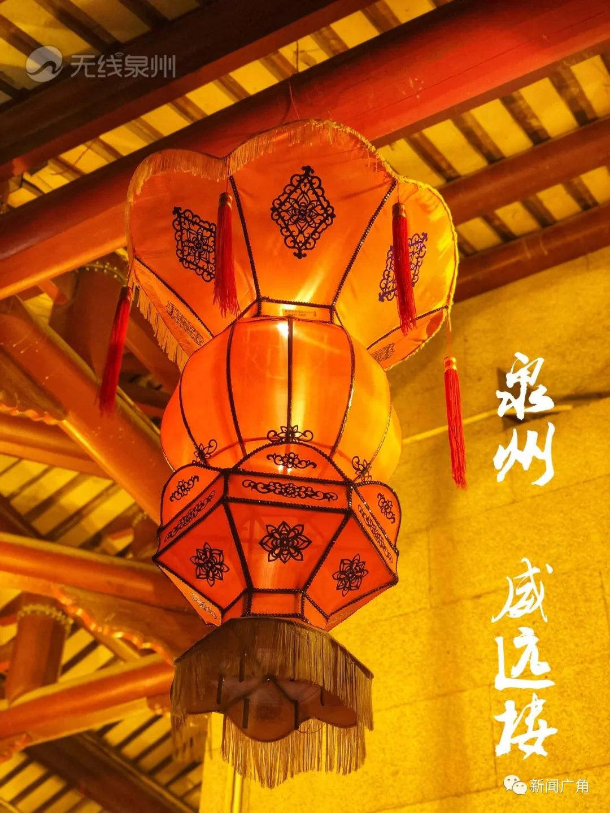
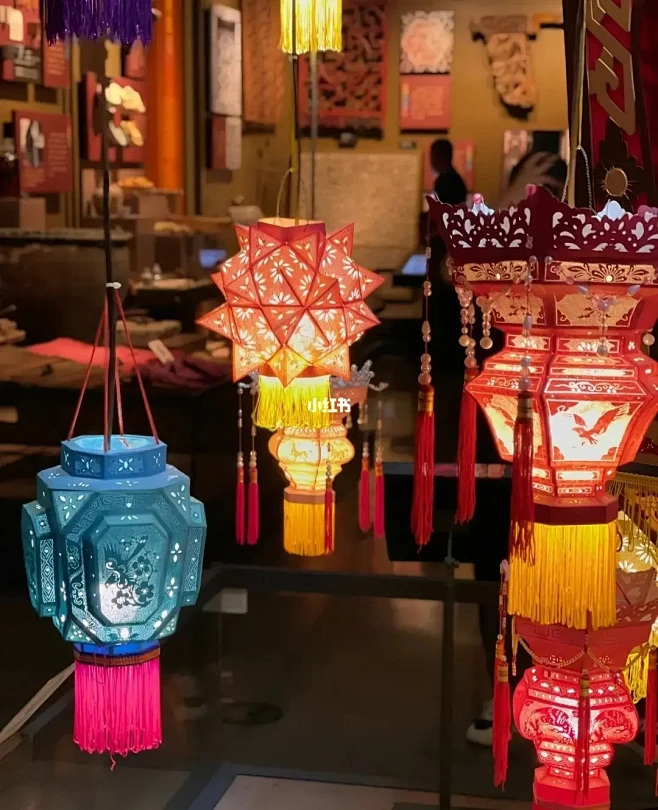

千载灯火 华夏遗珍
源远流长的灯彩艺术
灯彩，又称花灯，是中国古代人民创造的综合性传统手工艺品，广泛流行于元宵、中秋等传统节日。它起源于汉代，兴盛于唐宋，流传至今已有两千多年的历史。花灯不仅仅是照明的工具，更是集彩扎、裱糊、编结、刺绣、雕刻、剪纸、诗词书画于一体的综合艺术。
作为首批被列入国家级非物质文化遗产名录的传统艺术，中国花灯流派纷呈。北方花灯以气势磅礴、造型宏大见长；南方花灯则以工艺精细、巧夺天工著称。从南京秦淮的荷花灯，到泉州的刻纸料丝灯，再到仙居的针刺无骨花灯和潮州的人物屏灯，它们各自承载着浓郁的地域文化与民俗风情。
在2026年的今天，面对现代科技的冲击，传统的灯彩技艺正面临着前所未有的挑战与机遇。我们的老一辈工匠们在坚守传统工艺“原汁原味”的同时，不断推陈出新，将现代声光电技术融入花灯设计之中，使这项古老的艺术在时代的浪潮中依然熠熠生辉。

中国四大名灯

秦淮灯彩
源于南京，以竹木、藤条、金属丝为骨架，绸布、纸张为面料。以经典的“荷花灯”、“狮子灯”闻名，色彩艳丽，极具江南水乡特色与六朝古都的历史底蕴。

泉州花灯
福建泉州特产，分为彩扎灯、刻纸灯和针刺灯。尤以刻纸无骨料丝灯最为独特，通体没有骨架，全靠精细雕刻的纸板拼接而成，晶莹剔透，富丽堂皇。

仙居花灯
浙江台州仙居的绝技，享有“中华第一灯”美誉。其特点是“针刺”与“无骨”，纸面上密密麻麻刺出百万个微孔，光源透出形成绝美图案，工艺极其繁复。

潮州花灯
广东潮汕地区代表，融合了潮剧、潮绣、泥塑等艺术元素。最擅长制作大型立式“人物屏灯”，生动重现历史典故与神话传说，人物脸谱个性鲜明。